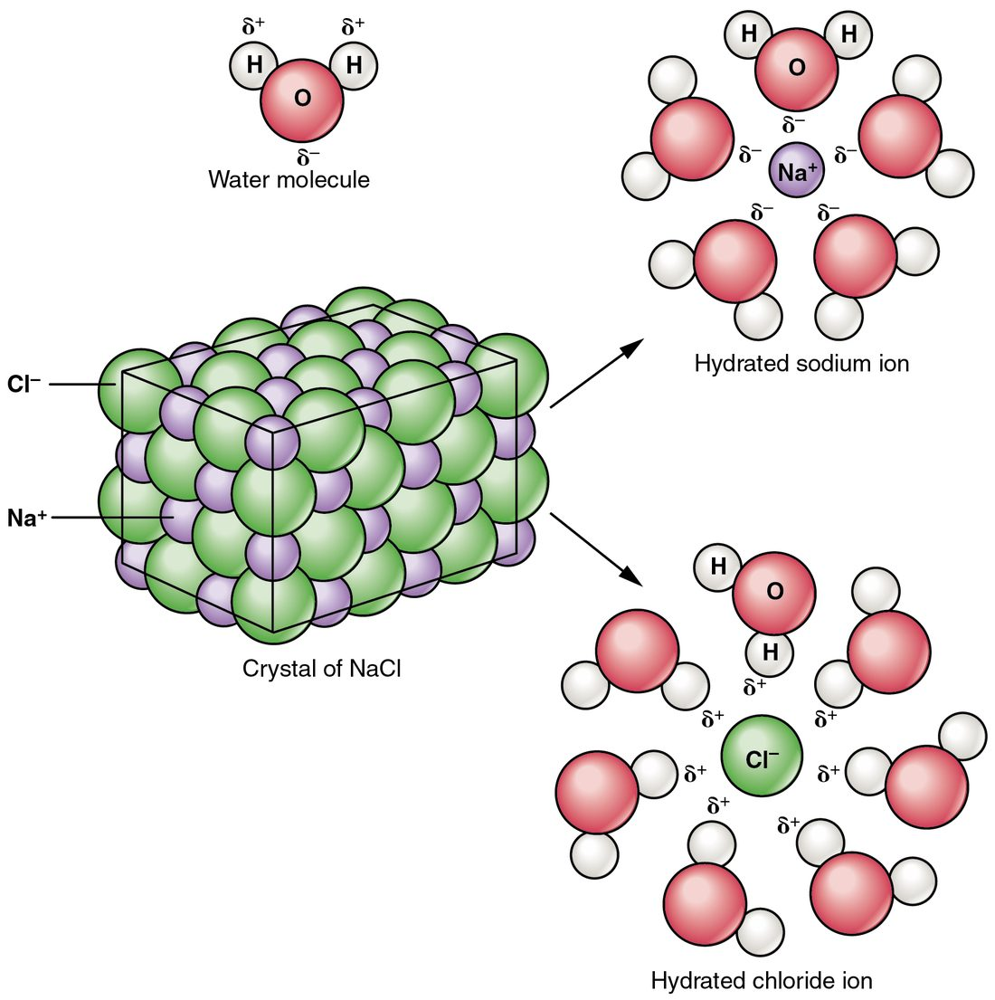

Water, solutions and concentration
Water is polar and its molecules hydrogen-bond to each other.
Part 1 · Clinical hook
Why this matters
Mr. Alvarez, 72, has been vomiting for two days and can barely stand. His nurse hangs a bag labeled "0.9% sodium chloride" and explains that its dissolved particles are close to those of his own blood. What does 0.9% mean, why does the particle count matter, and what makes sodium chloride dissolve at all? The answers all start with the water molecule.
Part 2 · Foundations
What this builds on
Part 3 · Prerequisite check
Quick check before you start
1. Why is a water molecule polar?
- Oxygen pulls the shared electrons harder than hydrogen, and the molecule is bent
- Oxygen and hydrogen share electrons exactly equally
- Water is held together by ionic bonds
Show the answer
Unequal sharing leaves oxygen partly negative and the hydrogens partly positive, and the bent shape keeps those partial charges from canceling.
- Correct: Oxygen pulls the shared electrons harder than hydrogen, and the molecule is bent:
- Oxygen and hydrogen share electrons exactly equally:
- Water is held together by ionic bonds:
2. What is a hydrogen bond?
- A shared pair of electrons between hydrogen and oxygen in one molecule
- A weak attraction between a partly positive hydrogen and a partly negative oxygen or nitrogen nearby
- The transfer of an electron from hydrogen to another atom
Show the answer
A hydrogen bond is an attraction between partial charges, usually between neighboring molecules. No electrons are shared or transferred.
- A shared pair of electrons between hydrogen and oxygen in one molecule:
- Correct: A weak attraction between a partly positive hydrogen and a partly negative oxygen or nitrogen nearby:
- The transfer of an electron from hydrogen to another atom:
3. What happens to an ionic compound such as potassium chloride in water?
- It stays as whole units held by covalent bonds
- Its ions separate and spread through the water
- Its ions gain protons and become neutral
Show the answer
Ionic bonds are weak in water. The ions separate and become free electrolytes.
- It stays as whole units held by covalent bonds:
- Correct: Its ions separate and spread through the water:
- Its ions gain protons and become neutral:
Part 4 · Anatomy panel
Anatomy

With labels hidden, select a box to reveal its label.
Part 5 · Causal chain
How it works, step by step
- Water's oxygen end is partly negative and its hydrogen ends are partly positive.Water molecules are attracted to ions: oxygen ends turn toward Na+ and hydrogen ends toward Cl−.
- Many water molecules pull on each ion at the surface of a sodium chloride crystal.The ions are pulled out one by one, and each travels wrapped in a shell of water.
- The freed ions spread evenly through the water.A solution forms, and its concentration is the amount of sodium chloride divided by the volume: 9 g in a liter is 154 mmol/L.
- Each unit of sodium chloride releases two particles, Na+ and Cl−.The solution's osmolarity, its total count of dissolved particles, is about twice its sodium chloride concentration: 154 × 2 ≈ 308 mOsm/L.
- Body fluid then loses water while keeping its dissolved particles, as when someone drinks nothing for days.The same particles sit in less water, so sodium concentration and osmolality both rise.
Part 6 · Key ideas
Key ideas
- Hydrogen bonds pull your water molecules toward each other, a property called cohesion. Molecules at the surface have water neighbors only below and beside them, so they are pulled inward and the surface acts like a stretched skin. This inward pull is surface tension.
- A solution is a mixture in which one substance is spread evenly, particle by particle, through another. The solute (solutus = loosened) is the substance that dissolves, and the solvent (solvere = to loosen) is what it dissolves in. In your body the solvent is almost always water.
- A mixture holds substances combined without bonds. A solution's particles are single ions and small molecules that never settle. A colloid (kolla = glue, -oid = like) holds larger particles, such as the very large molecules in your blood's liquid part, that jostling water molecules keep from settling. In a suspension (suspendere = to hang) particles settle once stirring stops, as blood cells sink in a standing tube.
- Hydrophilic (hydro- = water, -philic = loving) substances are ions and polar molecules, and they dissolve in water. Hydrophobic (-phobic = fearing) substances are nonpolar, such as oils, and they clump together. Nothing repels them: water molecules hold on to each other by hydrogen bonds and squeeze nonpolar molecules into clusters.
Part 7 · Core concept
Core concepts
Part 8 · Misconception
A common mistake
The wrong idea: A high blood sodium means the body holds too much sodium.
What actually happens: Concentration is amount divided by volume. A person who loses water but not sodium, for example by drinking nothing for days, ends up with a high sodium concentration while holding a normal amount of sodium. A lab value tells you the ratio; the history tells you whether the solute rose or the water fell.
Part 9 · Retrieval check
Check yourself
Anything you miss goes into your review queue.
1. On a hot day, sweat evaporates from your skin and your skin cools. What is the source of that cooling?
- Sweat is already colder than the skin when it first appears
- Skin heat breaks the hydrogen bonds holding each escaping molecule
- The ions in sweat absorb heat as they separate from each other
- Air flowing over wet skin carries heat away whether or not any water leaves
Show the answer
A water molecule can only leave the liquid as vapor once the hydrogen bonds to its neighbors are broken, and that takes a lot of heat. The heat comes from your skin, so as molecules evaporate your skin loses heat.
- Sweat is already colder than the skin when it first appears: Sweat is made from body fluid at body temperature. The cooling happens as it evaporates, not before.
- Correct: Skin heat breaks the hydrogen bonds holding each escaping molecule: Correct. Breaking hydrogen bonds to free each molecule soaks up heat from the skin.
- The ions in sweat absorb heat as they separate from each other: The ions in sweat are already separate when sweat forms. The cooling comes from water molecules escaping as vapor.
- Air flowing over wet skin carries heat away whether or not any water leaves: Moving air helps mainly by carrying off the vapor so more water can evaporate. On wet skin, the large cooling effect depends on water actually leaving.
2. Only about 1 to 2% of the oxygen in your arterial blood travels dissolved in the watery part of the blood; the rest rides on a carrier molecule inside red blood cells. Which property of oxygen gas best explains why so little dissolves?
- O2 carries a full negative charge that water repels
- O2 is too large a molecule to fit between water molecules
- O2 forms strong hydrogen bonds with itself instead of with water
- O2 is a nonpolar molecule, so water attracts it only weakly
Show the answer
The two oxygen atoms in O2 share electrons evenly, so the molecule is nonpolar. Water molecules attract each other far more strongly than they attract O2, so only a little O2 dissolves.
- O2 carries a full negative charge that water repels: O2 is a neutral molecule with no charge. Charged particles actually dissolve well in water.
- O2 is too large a molecule to fit between water molecules: O2 is a small molecule, smaller than many substances that dissolve well. Its low solubility comes from being nonpolar.
- O2 forms strong hydrogen bonds with itself instead of with water: O2 has no hydrogen atoms, so it cannot form hydrogen bonds at all.
- Correct: O2 is a nonpolar molecule, so water attracts it only weakly: Correct. Being nonpolar, O2 is hydrophobic enough that little of it dissolves.
3. Blood is described as a solution, a colloidal mixture and a suspension all at once. Which pairing of blood component and mixture type is correct?
- Dissolved sodium and chloride ions form a suspension
- Blood cells form a solution
- Very large molecules in the liquid part are colloidal
- Very large molecules in the liquid part settle out like blood cells
Show the answer
Ions are the solution part, very large molecules are the colloidal part and cells are the suspension part. Only cells settle when blood stands still.
- Dissolved sodium and chloride ions form a suspension: Ions are the smallest particles and never settle; they make up the solution part of blood.
- Blood cells form a solution: Cells are the largest particles and settle on standing; they are the suspension part.
- Correct: Very large molecules in the liquid part are colloidal: Correct. Very large molecules stay spread through the liquid without settling: colloids.
- Very large molecules in the liquid part settle out like blood cells: Colloidal particles are kept spread out by the jostling of water molecules. Only the cells settle.
4. A liter of fluid contains 9 g of sodium chloride. The molar mass of sodium chloride is 58.5 g per mole. What is its concentration in mmol/L?
- About 154 mmol/L
- About 526 mmol/L
- About 15 mmol/L
- About 308 mmol/L
Show the answer
Grams divided by molar mass gives moles: 9 ÷ 58.5 = 0.154 mol. Times 1,000 gives 154 mmol in one liter.
- Correct: About 154 mmol/L: Correct. 9 g ÷ 58.5 g/mol = 0.154 mol = 154 mmol per liter.
- About 526 mmol/L: 526 comes from multiplying 9 by 58.5. To turn grams into moles you divide by the molar mass.
- About 15 mmol/L: 15 is off by a factor of ten: 0.154 mol is 154 mmol, not 15.
- About 308 mmol/L: 308 is the osmolarity, counting Na+ and Cl− separately. The question asks for the concentration of sodium chloride itself.
5. An elderly man loses water through breathing and skin during a heat wave and drinks nothing. Treat the water he loses as pure water. Predict the change in each variable in his body fluid.
| Variable | Change |
|---|---|
| Volume of his body water | — |
| Total amount of sodium in his body fluid | — |
| Sodium concentration | — |
| Osmolality of his blood | — |
| Number of red blood cells in his body | — |
Show the answer
Losing pure water shrinks the volume but leaves the solutes behind. The same amount of sodium and other particles in less water gives a higher concentration and a higher osmolality.
- Volume of his body water: down. Water is leaving and none is coming in, so the volume falls.
- Total amount of sodium in his body fluid: no change. The lost fluid is pure water, so no sodium leaves. The amount of sodium stays the same.
- Sodium concentration: up. Concentration is amount divided by volume. The same amount of sodium in less water gives a higher concentration.
- Osmolality of his blood: up. Osmolality counts all dissolved particles per kilogram of water. The particles stay while the water shrinks, so the count per kilogram rises.
- Number of red blood cells in his body: no change. Losing water changes their concentration, not how many red cells there are.
6. Fluid X holds 150 mmol/L of sodium chloride. Fluid Y holds 150 mmol/L of a molecule that stays whole when it dissolves. How do their osmolarities compare?
- They are equal: 150 mOsm/L each
- X is about 300 mOsm/L and Y is about 150 mOsm/L
- Y is higher than X
- X is about 150 mOsm/L and Y is about 300 mOsm/L
Show the answer
Osmolarity counts particles. Each sodium chloride releases two ions, so X has about 300 mOsm/L. Each molecule of Y stays as one particle, so Y has 150 mOsm/L.
- They are equal: 150 mOsm/L each: Equal concentrations of solute do not mean equal particle counts. Sodium chloride splits into two particles; Y does not split.
- Correct: X is about 300 mOsm/L and Y is about 150 mOsm/L: Correct. Two particles per unit doubles X's count; Y stays at one per molecule.
- Y is higher than X: Osmolarity depends on the number of particles, not their size. A large molecule counts as one particle, the same as a small ion.
- X is about 150 mOsm/L and Y is about 300 mOsm/L: This swaps them. The solute that separates into ions, sodium chloride, is the one with the doubled count.
7. Mrs. Lindqvist, 88, lives alone and has barely drunk anything for three days. Her blood sodium is high. Which conclusion does that result best support?
- She must have eaten a large amount of sodium chloride recently
- Her body contains far more sodium than normal
- Her body water has fallen, concentrating the sodium she has
- Her sodium ions have gained extra charge
Show the answer
Concentration is amount divided by volume. With little water coming in and some always leaving through breath, skin and urine, her body water shrinks, and even a normal amount of sodium becomes more concentrated.
- She must have eaten a large amount of sodium chloride recently: Nothing in the history suggests extra intake, and extra sodium is not needed to raise the concentration. Losing water does it on its own.
- Her body contains far more sodium than normal: A high concentration can come from normal total sodium in too little water. The history points to water loss.
- Correct: Her body water has fallen, concentrating the sodium she has: Correct. Less water, same sodium: higher concentration.
- Her sodium ions have gained extra charge: Sodium's charge is fixed at +1. A concentration counts how many ions there are per liter, not how charged they are.
Part 10 · Summary
Summary
Water is polar and its molecules hydrogen-bond to each other. That gives it a high capacity for heat, cooling as it evaporates, cohesion and surface tension, and the power to dissolve ions and polar molecules. In a solution, the solute dissolves in the solvent. Hydrophilic substances (ions and polar molecules) dissolve; hydrophobic, nonpolar ones are pushed into clusters by water holding on to itself. Mixtures can be solutions, colloids or suspensions, and blood is all three. Concentration is amount of solute divided by volume, measured in percent, mg/dL or mmol/L; it rises when solute is added or water is lost. Osmolarity counts every dissolved particle, each ion separately, and normal blood osmolality is about 275 to 295 mOsm/kg.
Part 11 · Up next
What comes next
Part 12 · Connections